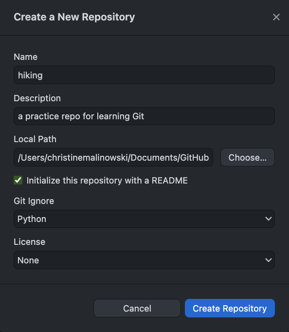

Version Control with Git and GitHub
Contents
Version Control with Git and GitHub#
This notebook is the lesson plan for introducing Git and GitHub during the Carpentries @ MIT workshop. The content of this introduction is based on the Software Carpentry lesson on “Version Control with Git” but we are using the application GitHub Desktop instead of the Git Bash command line.
Automated Version Control#
Purpose#
Keep track of what each person did and when in a project.
Go back to and question specific changes as well as “undo” when needed
Notify conflict between copies from collaborators and merge changes selectively
Useful for any digital projects, including software coding, data analysis, visualization, and presenting etc.

Version control with word processors#
Version control systems start with a base version of the document and then record changes you make each step of the way. You can think of it as a recording of your progress: you can rewind to start at the base document and play back each change you made, eventually arriving at your more recent version.
E.g. Microsoft Word - track changes & Office365/WordOnline; GoogleDoc / Version history, LibreOffice / Recording and Displaying Changes
Record progress that can be rewound to start

Version control treating changes seaprately from a document#
Once you think of changes as separate from the document itself, you can then think about “playing back” different sets of changes on the base document, ultimately resulting in different versions of that document. For example, two users can make independent sets of changes on the same document.
Two users can make independent sets of changes in the same document

Owner can incoporate multiple users’ changes to the same base document if there is no conflict.

A version control system is a tool that keeps track of these changes for us, effectively creating different versions of our files. It allows us to decide which changes will be made to the next version (each record of these changes is called a commit), and keeps useful metadata about them. The complete history of commits for a particular project and their metadata make up a repository. Repositories can be kept in sync across different computers, facilitating collaboration among different people.
Git, GitHub, GitHub Desktop, and GitHub Enterprise @ MIT#
Git - The open source version control tool on your local computer - the core to keep the record of all changes.
GitHub - A cloud server hosting Git repositories; can be connected to your local Git repos; Currently owned by Microsoft. https://github.com
GitHub Desktop - A desktop application that can simplify your workflow connecting your local repos to GitHub cloud.
GitHub Enterprise @ MIT - An instance of GitHub hosted by MIT for MIT students, faculty and staff use. https://github.mit.edu/
Setting Up Git and GitHub Desktop#
Installing Git and GitHub Desktop#
Make sure you followed the instructions on our workshop page to:
Install Git
Install GitHub Desktop (GitHub Desktop Help page)
Create an account on https://github.com
Share your GitHub account on our course Etherpad (in the participants name/contact list)
Configuring Git#
Configure Git with:
your name and email address
our preferred text editor
the preference to use these settings globally (i.e for every project)
Checking Git version#
$ git --version
Configuring your identity#
In Git Bash (Windows) or Terminal (Mac), run the following using your own name and email address. These will be associated with any changes you push to GitHub later.
$ git config --global user.name "Happy Hiker"
$ git config --global user.email "happy.hiker@moun.tai.ns"
Configuring your default text editor#
# to nano
$ git config --global core.editor "nano -w"
Check your settings and get help#
$ git config --list
$ git config -h
$ git config --help
It is necessary to configure Git locally before we start using GitHub Desktop to connect to GitHub.
Setting up GitHub Desktop#
Read more on GitHub Desktop Help
Authenticating to GitHub in GitHub Desktop#
Use GitHub Desktop menu
on Mac, Preference –> Accounts –> Sign in GitHub.com with your account
on Windows, File –> Options –> Accounts –> Sign in GitHub.com with your account
See here for more help if you have configured two-factor authentication for GitHub.
Configuring Git for GitHub Desktop#
Use GitHub Desktop menu
on Mac, Preference –> Git –> add your name and email
on Windows, File –> Options –> Git –> add your name and email
If you have signed in with your Github.com account when you first open your GitHub Desktop, your Git would have been configured with information from your Github.com account.
Creating a local repository#
Use GitHub Desktop
Create a New Repository on your Hard Drive… Or File –> New Repository…
Fill out the fields in the form and Create Repository with:
Repo (i.e. folder) name: hiking

Once you click on Create Repository, GitHub Desktop will create a folder at the Local Path you specified and initialize it as a repository (repo).
Use the Finder on Mac or File Explorer on Windows to navigate to the folder.
The repo hiking now has a README.md file and two hidden files, .gitattributes and .gitignore, as well as one hidden directory .git, where Git stores all its repository data.
Tip: To toggle display hidden files,
On Mac, Command + Shift + Dot
On Windows 10 / 8, from the File Explorer window (shortcut: windows key + E) choose –> View –> Show/hide –> check Hidden Items.
Tracking Changes using GitHub Desktop#
Add a text file#
Create a plans.txt file using a plain text editor (e.g. Nano, Notepad++, Atom, Sublime Text etc.. )
Example: using Bash and Nano to do so. Make sure that you are under the directory hiking.
$nano plans.txt
Type the text below into the plans.txt file and save the file
This is our summer hiking plan.
After saving the file, look at the GitHub Desktop window. You will see the change highlighted.

Git now knows that it’s supposed to keep track of plans.txt, but it hasn’t recorded these changes as a commit yet. To do so, type in the following message to the Note and Description areas on the lower bottom of the GitHub Desktop page.
Summary: Create plans.txt
Description: Start notes on hiking plans
And then, click on the Commit to main button
Good commit messages start with a brief (<50 characters) summary statement about the changes made in the commit. Generally, the message should complete the sentence “If applied, this commit will.” If you want to go into more detail, use the Description field to explain. Use this additional space to explain why you made changes and/or what their impact will be.
Now, look at the GitHub Desktop, it tells us that there is no local changes and everything is up-to-date.
Tracking edits#
Add more information to plans.txt
Vermont is nice this time of year.
$ nano plans.txt
$ cat plans.txt
When you see the change highlighted on GitHub Desktop window, repeat the Commit to Main process above. This time, with the commit message as
Summary: Update plans.txt
Description: Add thoughts on locations
When you click on the Commit to Main button, you move the changes Git tracked at the staging area to the repository as shown in the figure below.

When you have multiple changes to one file or changes to multiple files, you can select the changes you’d like to group for any given commit.
For example, add one more line below to plans.txt
Christine thinks Maine is way better!
And then, add the following line to README.md
This is the place where our group is debating where to go hiking and what to do when we get there.
Note how you can check and uncheck multiple changes to include or not include for a given commit.
First, select plans.txt changes and Commit with the following message:
Summary: Update plans.txt
Description: Added Christine’s thoughts.
Second, select README.md changes and Commit with the following message:
Summary: Update README.md
Description: Added what the group is trying to do.
This process can be illustrated by the following figure:

Tips:#
The History tab will show you details of all the commits. You may choose to revert a specific commit with the tool too. But be careful to not create any conflicts.
Git does not track directories on their own, only files within them. Try to make a subfolder packing and leave it empty. It does not show up on the GitHub Desktop Changes.
Practice#
Under the packing folder, create a new file supplies.txt and add your iniital thoughts about what we should bring on a hiking trip
Now check GitHub Desktop. What change(s) are listed? supplies.txt? the packing folder? Or both?
Commit the change with a message. Looking at the history, do you see a separate commit for the folder packing itself?
Ignoring Things#
What if we have files that we do not want Git to track for us, like backup files created by our editor or intermediate files created during data analysis?
You can add those file paths and names to the hidden .gitignore file.
Open the current .gitignore file under your hiking repo to examine it. Because we chose the Git Ignore for python when we initialized the repo in GitHub Desktop, the list of file names here are those system files that a Python project often has that you don’t need to track. This file tells Git to ignore changes happening to those files.
Different types of programming may have different system files to ignore. Using the tool in GitHub to initialize repos helps to create the default for each type of programming. But please check the file to make sure that the files you do want to keep track of are not accidently listed here, especially when you observe anything strange.
Remote into GitHub#
So far, we are doing Version Control on our local computer. In order to collaborate with others and take full advantage of the sophisticated version control features, we need to use hosting services like GitHub, Bitbucket or GitLab to hold the master copies where collaborators could share changes with each other.
The relationship between the local Git repo and the remote one can be illustrated as below.

On GitHub Desktop, you can use the Publish repository button to post your local repo to GitHub.com or GitHub Enterprise @ MIT, since we have configured our GitHub account into the GitHub Desktop.
Note: When publishing to GitHub (either with a free account or an MIT Enterprise GitHub account), you can publish either a private or public repository.
Once you successfully published your repo, go to a browser and log onto your account on GitHub.com and take a look at the repository added there. All the files and commit history are synchronized to the remote GitHub repo.
Push changes from local repo to remote repo#
Still use Bash and Nano to add one more line below to plans.txt
Phoebe suspects Maine is full of bears.
Once you saved the change, commit the change to your local repo with the following message.
Summary: Update plans.txt
Description: Added new opinion on destination.
Once it’s committed, you will see a new option to Push origin. Use that to push the changes from your local repo to the remote repo on GitHub.com. Then, check the remote repo to see if the changes appear. You may need to refresh your browser.
Fetch and pull changes from remote repo to local repo#
On your GitHub.com repo page in the browser, open the README.md file and use the pencil icon (Edit this file) tool to add the following sentence to the file.
I made this edit on the remote GitHub repo through web browser.
Use the bottom box to Commit changes with the following message:
Summary: Update README.md
Description: Added a line to test fetching.
Once that change is commited, come back to your GitHub Desktop, click on the Fetch Origin button. GitHub Desktop will compare the remote and local repos and show you the option to “Pull 1 commit from the origin remote”. Click on Pull origin to pull the changes from the remote repo to your local repo.
Now, the local and remote repos are synchronize with all the content and change history.
Tip: It’s a good practice to always Fetch Origin and Pull origin before you start working on your local repo to avoid any potential conflicts.
Tip: You may also create a repo under the GitHub.com account in the browser and then configure your local repo to it. See this link here for the steps.
Collaborating#
The first approach to work collaboratively on a project using GitHub is to invite a collaborator to the project.
Invite collaborator#
In a virtual class, our instructors will invite you as collaborators for a practice project owned by the instructor. The instructor will play the Owner role and all students will play the Collaborator role for the rest of the session.
As a project owner, you can give your collaborator access to your repo by clicking on the Settings button on the right of your GitHub.com Repo page. You may need to ask your collaborator’s GitHub username to find them.
Accept invitation#
Collaborator, you need to first accept the invitation from the Owner. Look for an email sent to you with an View Invitation button to click on. Make sure you have logged in your GitHub account in the browser before clicking on the View Invitation button.
Or you can look for the invitation under the Your Organizations section https://github.com/settings/organizations once you are logged in.
Once the Collaborators Join and Accept Invitation for the project, they can access the repo. Note that the repo will still be under the Owner’s account. On that repo page, click on the greenbutton Codes on the right side. And choose “Open in Desktop”. You will be prompted to choose a local path to save this repo.
Caution: please do not choose the path where you saved your own hiking repo, if the repo names are both hiking. Instead, create a subfolder Collaboration first then save the new repo from the Owner under that.
The Collaborator may also take the URL or SSH link from the popup window and then use the GitHub Desktop, File –> Clone Repository… to accomplish the same task.
The Collaborator can now make a change in her clone of the Owner’s repository, exactly the same way as we’ve been doing before with their own repository.
Branch#
If you are the owner or have collaborator permissions on a repository, you can create a branch off of the repository’s default branch so you can safely experiment with changes. The default branch of a repository is usually the Main branch.
Create a branch#
Use the Current Repository tab on your GitHub Desktop to navigate to the repo you’d like to create a branch in.
On the top of the GitHub Desktop, switch to the branch that you want to base the new branch on by clicking the Current Branch and choosing it from the list. For now, it would be just the Main branch. Then, click on New Branch.
Type the name of the new branch you want to create (e.g. test-YourInitials) and then Create Branch. Caution: make sure you use a different name for the new branch from your collaborators to avoid future conflict.
Once the branch is created on the Collaborator’s local repo, the Collaborator will see an option to publish it to the remote repo. Please Publish branch and the Owner will see the new branch and new edits committed once the Owner refresh the repo in the browser.
The two branches now have the exact same content. But you may add future edits to them separately. They are also connected. Individual commits can be pulled from one branch to another independently.
Here is a network graph for the Yelp source code repo that may help you understand the concept of branches. The live version can be accessed here. https://github.com/Yelp/yelp.github.io/network
Pull request to merge changes between branches#
Under the branch you created, you can now make changes to the files or create new files without influence other branches.
For example, with GitHub Desktop set to the branch you created, open plans.txt and add the following sentence to line 4.
Phoebe suspects Maine is full of bears. Bears can be scary.
commit the change to the branch of your local repo with the following message.
Summary: Update plans.txt
Description: Added thoughts on bears.
Then, push the change to remote.
Once you are ready with the changes made in one branch, you can send a Pull request to request merging them into another branch. A Collaborator can Confirm Merging in the target branch, that may or may not be created by them, unless the Owner has setup rules for the pull requests to be reviewed by specific members before merging.
A Pull request can be initiated on the browser page of the Github repo.
On GitHub Desktop: click on Branch –> Create Pull Request will take you to a web browser page.

On your Browser: you can browse to Braches page by clicking on the number of Branches link on the top left of your GitHub.com repo page. For each Active Branch, you will see a New Pull Request button on the right side.
Create Pull Request or New Pull Request link takes you to a page where you can review the changes, write a message for the pull request, and create the pull request.
If there is no conflict between the two branches, they are ready to be Merged. All requests can be accessed from the Pull Requests tab.

Both the Collaborator and the Owner can confirm the Merge, unless the Owner has setup Rules for pull requests to be reviewed by specific members.
Read more about different types of merge on this GitHub.com support page
Choose the type of merge you’d like, write a summary, and Confirm the merge.
Practice:#
The Collaborator makes a change to the plans.txt file in the newly created branch and push the change to the Owner’s remote repo. The Owner can fetch and pull that change to the Owner’s local repo.
TIP: When you are using GitHub Desktop to switch between branches, the local folder for the repo in your File Explorer or Finder will automatically be switched to that branch.
Conflicts#
During collaboration, if the Owner and the Collaborator attempted to change the same part of a file at the same time, there can be conflict. The party who pushes the change to the remote repo later will be asked to resolve the conflict.
Owner and Collaborator both browse to the same branch of their local copy of the Owner’s repo hiking.
Owner and Collaborator make changes to the same line of plans.txt file on their own computer. And then the Collaborator push the changes to the remote repo first.
If the Owner changes the same line before fetch/pull the Collaborator’s changes of that line, the Owner will see a message about Conflicts when the Owner tries to push the change to the remote repo.
First, the Owner will see GitHub Desktop note for “Pull Origin”.
After clicking on “Pull origin”, the Conflict notification window will show up.
The process can be demonstrated by the figure below.

GitHub Desktop will prompt the Owner to resolve the conflicts by merging the changes before the commit can be pushed to the remote repo.
An example of conflicts:
This is our summer hiking plan.
Vermont is nice this time of year.
Christine thinks Maine is way better!
<<<<<<< HEAD
Phoebe suspects Maine is full of bears. Ye says Maine has great ocean views.
=======
Phoebe suspects Maine is full of bears. But we should be fine if we are careful.
>>>>>>> 93c4124ba58d7db63f7fb852d6afba9cd0cc7ad8
Our change is preceded by <<<<<<< HEAD. Git has then inserted ======= as a separator between the conflicting changes and marked the end of the content downloaded from GitHub with >>>>>>>. (The string of letters and digits after that marker identifies the commit we’ve just downloaded.)
It is now up to us to edit this file to remove these markers and reconcile the changes. We can do anything we want: keep the change made in the local repository, keep the change made in the remote repository, write something new to replace both, or get rid of the change entirely.
Remember to delete all the added symbols and separators.
If you are using a visual editor, you may see the highlight of Conflicts as in the screenshot below from Atom.
Once the changes are merged and saved, you can push the new commit to the remote repo.
Do not forget to Push origin after resolving the conflict.
Fork#
A fork is a copy of a repository. Forking a repository allows you to freely experiment with changes without affecting the original project, and without being added as a collaborator of a public repository.
Fork a public repository#
Here is an example repository for you to Fork. Go to https://github.com/CarpentriesMIT/CO2EmissionPracticeDemo
Use the top right button to Fork the repository. Notice that the content stays the same but the location of the repo will be changed from the original owner’s account to yours once the fork is successful.
When you Fork a repo, you can choose if you would like to include the Default branch only or all branches in the repo.
Once it’s forked, you can use Code / Open it on GitHub Desktop as a local copy to edit. Your GitHub Desktop will ask the Fork Behavior you prefer - directly interact with the forked repo under your account or the original repo you forked from.
The Fork Behavior can be switched between the two modes under the menu Repository / Repository Settings.

Forked repositories are linked to the original repository, often referred to as the upstream repository.
When you click on Fetch Origin or Fetch Upstream in GitHub Desktop depending on which Branch you switched to on GitHub Desktop. ‘Origin’ means the Repo you forked to your account, while ‘upstream’ means the original Repo you forked from.
Under History, when “Select Branch to Compare”, you will see the option of comparing with both the “origin” and “upstream” remotes.
Send pull request to a public repository#
You can use GitHub Desktop, Branch –> Create Pull Request to submit your pull request to the upstream remotes.
Practice#
Make a change to the “CO2EmissionAnalysis.ipynb” file or the README.md file in the repository you forked earlier. And try to make a pull request to the upstream repo under the CarpentriesMIT account.
Read more about Fork a Repo